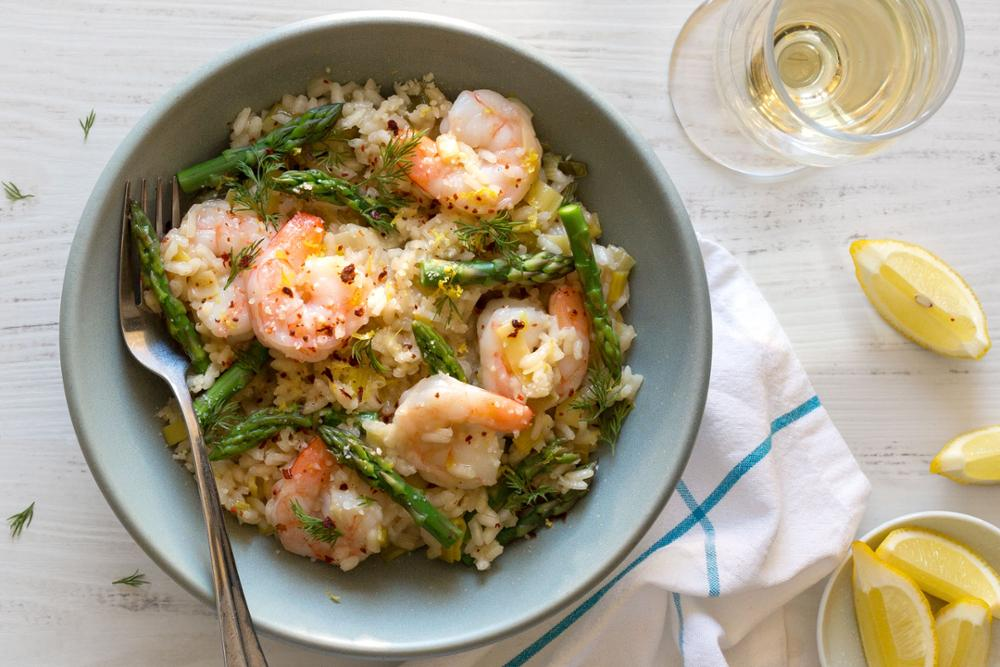

Asparagus & Shrimps Risotto
Ingredients
- 12 ounces risotto rice: Arborio or Carnaroli or Vialone Nano
- 2 shallots, minced
- 6 tablespoons unsalted butter
- Sea salt
- 1 pound medium shrimps, shelled and deveined
- 1 cup dry white whine
- 2 cups vegetable stock (please make a real one.)
Preparation
- Cook the asparagus in salted boiling water until crisp-tender. Drain and cool under running water; cut into 1-inch pieces.
- Season the shrimp with salt and pepper..
- In a skillet, heat the oil. Add the shrimp and cook over moderately high heat, turning, until just white throughout, 3 minutes. Transfer to a plate.
- In a saucepan, bring 4 cups of water and the stock to a boil. Cover and keep warm.
- Add the onion and cook over moderate heat, stirring, until softened, 5 minutes.
- Add the rice and cook, stirring, for 2 minutes.
- Add the wine and simmer until almost evaporated.
- Add enough stock to just cover the rice and cook, stirring, until the stock has been absorbed.
- Continue stirring in stock, 1/2 cup at a time, until nearly absorbed between additions.
- The risotto is done when the rice is al dente and suspended in a creamy sauce, 25 minutes.
- Stir in the cheese and remaining 2 tablespoons of butter. Fold in the asparagus and shrimp. Season with salt and pepper.
- Fold in the asparagus and shrimp
- Season with salt and pepper.